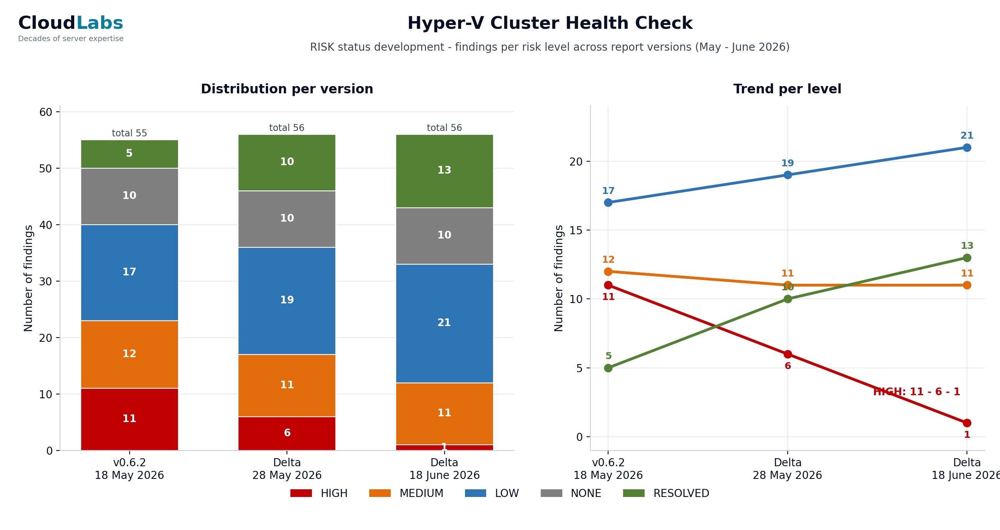

How we Follow Up on the Hyper-V Cluster Health Check
A Hyper-V cluster health check that ends with a single PDF is a snapshot, and a snapshot ages the moment you start fixing things. Real remediation runs over weeks, in rounds, and the value of the engagement is decided by whether everyone can see what moved, what is still open, and which way the trend is heading. That is a reporting discipline, not a one-off document, and this article is about how to run it.
The pattern CloudLabs uses on every recurring health check has three artifacts that travel together: a delta report that says what changed and why, a remaining-risk document that is the working to-do list, and a risk trend chart that is the one-glance picture for management. None of them contains a customer name in this article. The mechanics are what transfer.
- Why one health check report is not enough
- The three artifacts of a progress report
- The delta report: what moved and why
- The remaining-risk document: the working list
- The risk trend chart: the one-glance picture
- The discipline behind the colours
- Re-measurement is what makes it honest
- Making it repeatable
1. Why one health check report is not enough
The first deliverable of a health check is a findings document: a numbered list of issues, each with a severity, evidence, and a recommendation. That document is correct on the day it ships and starts decaying immediately, because the whole point of delivering it is that someone now goes and fixes things. Two weeks later half the High Risk findings are closed, one fix turned out to have a side effect, the customer replaced a domain controller in the meantime, and the original PDF describes a cluster that no longer exists.
You can handle that in two ways. You can re-issue the whole findings document every round, which buries the reader in unchanged text and makes it hard to see what actually happened between versions. Or you can report the delta: keep the baseline as the system of record, and on each round publish a focused document that says exactly what changed, plus a slimmed view of what is still open, plus a chart that shows the trajectory. The second approach is what keeps an engagement legible over six or eight weeks of work.
The baseline findings document stays the anchor. Every later report references its finding numbers, so a reader can always trace a closure back to the original description. What changes round to round is the delta on top of it.
2. The three artifacts of a progress report
A progress round produces three things, and they are deliberately separate because they serve three different readers.
- The delta report. For the record. Per finding, it states the old level, the new level, the reason for the move, and the evidence. It includes closures, downgrades, reopenings and new discoveries with equal weight. This is the document an auditor or a successor engineer reads to understand the history.
- The remaining-risk document. For the team doing the work. Only the still-open findings, ordered by severity, with the resolved and not-applicable items deliberately stripped out. This is the to-do list for the next round.
- The risk trend chart. For management. A single image: count per severity level across every report version, so the direction of travel is obvious without reading a word of prose.
Splitting them matters. If you fold everything into one file, the team working the list has to wade through resolved history, and management has to read engineering detail to find the one number they care about. Three artifacts, three audiences, generated from one set of measurements.
3. The delta report: what moved and why
The delta report is built per finding, and every finding that moved gets a small block: its number, its title, the new severity badge, and a short "current situation" paragraph that cites the measurement that justifies the move. The categories of movement are fixed:
- Resolved. The root cause is fixed and the re-measurement confirms it is gone. Example shape: a missing cumulative update is now installed on every node and the build numbers prove it, so the finding closes.
- Lowered. The risk is reduced but not eliminated. The finding stays open at a lower level with the residual risk named explicitly.
- Reopened. A finding that was closed or low has moved back up, usually because a fix had a side effect or a benign-looking condition reappeared after maintenance. This is reported as prominently as a closure.
- New. Something the latest measurement surfaced that was not in scope or not present before.
The honesty of the delta report lives in that "current situation" line. You do not write "patching done". You write what you measured: the validation run timestamp, the count of tests passed and the warnings that remain, and why the remaining warnings are benign or not. A reader who was not in the room can reconstruct the judgement from the evidence. That is the difference between a status update and a report.
An anonymised excerpt from a delta report shows the four movements in the report's own voice. The finding numbers and descriptions here are generic, the shape is the real thing:
F12 Cumulative update missing on cluster nodes HIGH -> RESOLVED
Current situation: June CU installed on all nodes on 12 Jun; build numbers
verified after reboot. Root cause fixed. Finding closed.
F08 Storage headroom imbalance across nodes HIGH -> MEDIUM
Current situation: in-site failover headroom restored (busiest node
442 -> 204 GB used); cross-site skew remains. Risk lowered, not closed.
F20 CSV ownership skewed onto one node after patching RESOLVED -> LOW
Current situation: Cluster-Aware Updating left most CSVs owned by the
last-patched node. Re-balanced and re-confirmed; kept at LOW as a recurring
post-maintenance check rather than left closed.
F31 Backup exclusion path no longer reachable MEDIUM -> RESOLVED
Current situation: workload decommissioned and removed; re-scan confirms
the path is gone, not merely unreachable. Closed.Each line carries its own justification: a closure rests on a verified build number, a downgrade names the residual risk, a reopening is stated openly, and a Resolved is only granted when the thing is gone rather than merely out of reach. Read together they let a reviewer audit every level change without attending a single meeting.
4. The remaining-risk document: the working list
The remaining-risk document is the delta report's opposite in spirit. The delta report is about history and is comprehensive. The remaining-risk document is about the present and is ruthless: it contains only the findings that are still open, ordered High then Medium then Low, and it deliberately drops everything that is resolved or not applicable, because a to-do list that includes finished work is noise.
It is the document the customer's team actually opens during the next maintenance window. Each open finding carries its current measured numbers, not the baseline numbers, so a finding that was lowered from High to Medium shows the Medium-level reality and not the original alarm. Where a finding is partly resolved, for example a storage imbalance that is fixed on most volumes but not all, the document shows the per-item status so the remaining work is visible at the granularity of the work, not the granularity of the finding.
Putting the trend chart at the top of this document, before the open findings, gives the reader the context before the detail: here is where we are, here is what is left. It is a small thing and it changes how the document reads.
If your last health check was a single PDF and the remediation since then lives in someone's head and a spreadsheet, you have no defensible picture of whether the cluster got better or just busier.
A CloudLabs Hyper-V Cluster Health Check is structured as rounds with a delta report and a trend chart, so progress is measured, not asserted.
Schedule a Health Check intro call →5. The risk trend chart: the one-glance picture
The chart is the artifact management remembers. It plots the count of findings per severity level across every report version, as a stacked bar per version with a trend line per level on top. One look answers the only two questions leadership asks: is High Risk going to zero, and is anything creeping back up.
An anonymised example of the shape, three measurement rounds across a multi-week engagement. Click the chart to enlarge it:

The same numbers in a table, for screen readers and quick reference:
| Severity | Baseline | Round 1 | Round 2 |
|---|---|---|---|
| HIGH | 11 | 6 | 1 |
| MEDIUM | 12 | 11 | 11 |
| LOW | 17 | 19 | 21 |
| NONE | 10 | 10 | 10 |
| RESOLVED | 5 | 10 | 13 |
Two things in that table are worth saying out loud, because they are the parts people get wrong. First, the Low count went up while the engagement was clearly succeeding. That is not a regression. It is High and Medium findings being lowered rather than closed, which is honest reporting: a mitigated risk drops a level, it does not vanish. Second, the Resolved count is its own column and only grows, because a finding that is genuinely fixed should never silently leave the report. It moves to Resolved and stays countable, so the trend cannot be gamed by deleting closed items.
Build the chart with the same severity colours used everywhere else in the reporting, so a reader who has seen one badge recognises the bar. High Risk red, Medium orange, Low blue, None grey, Resolved green. Consistency across the delta report, the remaining-risk document and the chart is what lets someone move between the three artifacts without re-learning the legend each time.
6. The discipline behind the colours
A five-level taxonomy only works if the boundaries are defended. The two that get abused are the top and the bottom of the "good news" range, so they get explicit rules.
Resolved versus Lowered. Resolved is reserved for a fixed and re-confirmed root cause. If the risk is merely contained, the finding is Lowered, not Resolved. A workload isolated behind a VLAN so that nothing reaches it any more is a real and valuable mitigation, but the underlying object still exists, so it is Low, not Resolved, until it is actually decommissioned. The absence of exposure from where you happen to be standing is not the same as the cause being gone. Holding that line is the single most important reporting decision in the whole engagement, because it is what stops the trend chart from flattering everyone.
Reopened versus stayed-fixed. A finding that comes back gets reopened openly. After a maintenance round it is common for a benign-looking condition to reappear on every node, and the right move is to report it back into the list at the appropriate level with the explanation, not to quietly leave it closed because it was closed last round. The reader trusts the trend precisely because regressions show up in it.
7. Re-measurement is what makes it honest
Every round starts the same way it did at baseline: the same read-only inventory script, run from the customer's own management server, plus a fresh cluster validation. Nothing in the progress report comes from a meeting or a recollection. A finding only moves on the strength of a measurement taken after the change, and the report cites that measurement by its run: the inventory file, the validation timestamp, the specific counter.
This also catches the moving parts that a status-update style of reporting misses. A domain controller replaced mid-engagement, a node that briefly fell out of the management subnet, a validation warning that was measured before the patch reboots and is stale by the next round. Because the measurement is re-run rather than remembered, the report describes the cluster as it is on the day it ships, not as it was when the work was scheduled.
The mechanics of that read-only inventory and the pre-flight that keeps it self-documenting are covered in From Health Check to Patch Night: The Method at Work. The progress reporting in this article is the layer that sits on top of those measurements over multiple rounds.
8. Making it repeatable
The reason to standardise the three artifacts is that the next round, and the next engagement, should not re-invent them. The pattern that holds up:
- Keep the baseline findings document as the system of record and never renumber its findings. Every later report references those numbers.
- Generate the delta report, the remaining-risk document and the trend chart from the same round of measurements, so the three can never disagree with each other.
- Use one severity taxonomy and one colour set across all three, and defend the Resolved boundary strictly.
- Put the trend chart at the top of the remaining-risk document so context precedes detail.
- Cite the run behind every level change, so the report is reconstructable by someone who was not there.
Do that and a health check stops being a PDF that ages on a shared drive and becomes a measured trajectory that anyone can read in one image and trust in the detail. That is the deliverable customers actually keep.
Schedule a Hyper-V Cluster Health Check intro call →
Frequently asked questions
Once per measurement round, which in practice means after every batch of fixes that is large enough to change the risk picture. On a typical engagement that is every two to four weeks. Each round re-runs the same read-only inventory and validation, so every report is built on a fresh measurement, not on a status meeting.
Resolved means the root cause is actually fixed and re-measured as gone. Lowered means the risk is reduced but the cause is still present, for example a workload isolated by VLAN instead of fully removed. Mitigation moves a finding down a level. It does not close it. Keeping that line strict is what makes the trend chart honest.
The full report carries history, resolved items and context, which is what you want for the audit trail. The remaining-risk document carries only what is still open, ordered by severity, which is what the team actually works from in the next round. Two audiences, two documents.
Every round reports reopened and newly discovered findings alongside the resolved ones. A finding can move back up a level if a fix introduced a side effect, and that reopening is shown with the same weight as a closure. The trend chart counts every severity level on every version, so a regression is visible as a bar that grew.
Yes. The risk trend chart plots the count per severity level across every report version, as stacked bars with a trend line per level. One image shows whether High Risk is going to zero and whether anything is creeping back up. It is generated from the same numbers that drive the detailed reports.
Voortgang van remediatie rapporteren: deltarapport, restrisico-overzicht en een risk trend chart
Een Hyper-V cluster health check die eindigt met één PDF is een momentopname, en een momentopname veroudert op het moment dat je dingen begint te repareren. Echte remediatie loopt over weken, in rondes, en de waarde van de opdracht wordt bepaald door of iedereen kan zien wat er bewoog, wat er nog open staat, en welke kant de trend op gaat. Dat is een rapportagediscipline, geen eenmalig document, en dit artikel gaat over hoe je die voert.
Het patroon dat CloudLabs bij elke terugkerende health check gebruikt heeft drie artefacten die samen reizen: een deltarapport dat zegt wat er veranderde en waarom, een restrisico-overzicht dat de werkende to-dolijst is, en een risk trend chart die het oogopslag-beeld voor het management is. Geen ervan bevat in dit artikel een klantnaam. Het is de werkwijze die overdraagbaar is.
1. Waarom één health check-rapport niet genoeg is
De eerste oplevering van een health check is een bevindingendocument: een genummerde lijst van issues, elk met een ernst, bewijs en een aanbeveling. Dat document klopt op de dag dat het wordt opgeleverd en begint meteen te verouderen, want het hele punt van de oplevering is dat iemand nu dingen gaat repareren. Twee weken later is de helft van de High Risk-bevindingen gesloten, bleek één fix een bijwerking te hebben, verving de klant ondertussen een domain controller, en beschrijft de oorspronkelijke PDF een cluster dat niet meer bestaat.
Daar kun je op twee manieren mee omgaan. Je kunt elke ronde het hele bevindingendocument opnieuw uitgeven, wat de lezer bedelft onder ongewijzigde tekst en het lastig maakt om te zien wat er tussen versies echt gebeurde. Of je rapporteert de delta: houd de baseline als systeem van vastlegging, en publiceer elke ronde een gericht document dat precies zegt wat er veranderde, plus een uitgedunde weergave van wat nog open staat, plus een grafiek die het traject toont. De tweede aanpak houdt een opdracht leesbaar over zes of acht weken werk.
Het baseline-bevindingendocument blijft het anker. Elk later rapport verwijst naar de bevindingsnummers ervan, zodat een lezer een afsluiting altijd terug kan herleiden naar de oorspronkelijke beschrijving. Wat van ronde tot ronde verandert is de delta daarbovenop.
2. De drie artefacten van een voortgangsrapport
Een voortgangsronde levert drie dingen op, en die zijn bewust gescheiden omdat ze drie verschillende lezers bedienen.
- Het deltarapport. Voor de vastlegging. Per bevinding noemt het het oude niveau, het nieuwe niveau, de reden voor de verschuiving en het bewijs. Het bevat afsluitingen, verlagingen, heropeningen en nieuwe ontdekkingen met gelijk gewicht. Dit is het document dat een auditor of een opvolgend engineer leest om de historie te begrijpen.
- Het restrisico-overzicht. Voor het team dat het werk doet. Alleen de nog openstaande bevindingen, geordend op ernst, met de opgeloste en niet-van-toepassing items bewust weggelaten. Dit is de to-dolijst voor de volgende ronde.
- De risk trend chart. Voor het management. Eén beeld: aantal per ernstniveau over elke rapportversie, zodat de bewegingsrichting duidelijk is zonder een woord proza te lezen.
Het splitsen doet ertoe. Vouw je alles in één bestand, dan moet het team dat de lijst afwerkt door opgeloste historie waden, en moet het management engineering-detail lezen om het ene getal te vinden waar het om geeft. Drie artefacten, drie doelgroepen, gegenereerd uit één set metingen.
3. Het deltarapport: wat verschoof en waarom
Het deltarapport is per bevinding opgebouwd, en elke bevinding die verschoof krijgt een klein blok: het nummer, de titel, de nieuwe ernst-badge, en een korte 'huidige situatie'-alinea die de meting aanhaalt die de verschuiving rechtvaardigt. De categorieën van beweging liggen vast:
- Resolved. De root cause is gerepareerd en de hermeting bevestigt dat hij weg is. Voorbeeldvorm: een ontbrekende cumulatieve update staat nu op elke node geïnstalleerd en de buildnummers bewijzen het, dus de bevinding sluit.
- Lowered. Het risico is verminderd maar niet weggenomen. De bevinding blijft open op een lager niveau, met het restrisico expliciet benoemd.
- Reopened. Een bevinding die gesloten of laag was is weer omhooggegaan, meestal omdat een fix een bijwerking had of een onschuldig ogende conditie na onderhoud terugkwam. Dit wordt net zo prominent gerapporteerd als een afsluiting.
- New. Iets wat de laatste meting aan het licht bracht en wat niet in scope was of eerder niet aanwezig.
De eerlijkheid van het deltarapport zit in die 'huidige situatie'-regel. Je schrijft niet 'patchen klaar'. Je schrijft wat je hebt gemeten: het tijdstempel van de validatie-run, het aantal geslaagde tests en de waarschuwingen die resteren, en waarom de resterende waarschuwingen onschuldig zijn of niet. Een lezer die er niet bij was kan het oordeel uit het bewijs reconstrueren. Dat is het verschil tussen een statusupdate en een rapport.
Een geanonimiseerd fragment uit een deltarapport toont de vier bewegingen in de eigen stem van het rapport. De bevindingsnummers en beschrijvingen zijn hier generiek, de vorm is het echte werk:
F12 Cumulative update missing on cluster nodes HIGH -> RESOLVED
Current situation: June CU installed on all nodes on 12 Jun; build numbers
verified after reboot. Root cause fixed. Finding closed.
F08 Storage headroom imbalance across nodes HIGH -> MEDIUM
Current situation: in-site failover headroom restored (busiest node
442 -> 204 GB used); cross-site skew remains. Risk lowered, not closed.
F20 CSV ownership skewed onto one node after patching RESOLVED -> LOW
Current situation: Cluster-Aware Updating left most CSVs owned by the
last-patched node. Re-balanced and re-confirmed; kept at LOW as a recurring
post-maintenance check rather than left closed.
F31 Backup exclusion path no longer reachable MEDIUM -> RESOLVED
Current situation: workload decommissioned and removed; re-scan confirms
the path is gone, not merely unreachable. Closed.Elke regel draagt zijn eigen rechtvaardiging: een afsluiting steunt op een geverifieerd buildnummer, een verlaging benoemt het restrisico, een heropening wordt openlijk gesteld, en een Resolved wordt alleen toegekend wanneer het ding weg is in plaats van enkel buiten bereik. Samen gelezen laten ze een reviewer elke niveauwijziging auditen zonder één vergadering bij te wonen.
4. Het restrisico-overzicht: de werklijst
Het restrisico-overzicht is qua geest de tegenpool van het deltarapport. Het deltarapport gaat over historie en is volledig. Het restrisico-overzicht gaat over het heden en is meedogenloos: het bevat alleen de bevindingen die nog open staan, geordend High, dan Medium, dan Low, en het laat bewust alles weg wat opgelost of niet van toepassing is, want een to-dolijst met afgerond werk erin is ruis.
Het is het document dat het team van de klant daadwerkelijk opent tijdens het volgende onderhoudsvenster. Elke openstaande bevinding draagt zijn huidig gemeten cijfers, niet de baseline-cijfers, zodat een bevinding die van High naar Medium is verlaagd de Medium-werkelijkheid toont en niet het oorspronkelijke alarm. Waar een bevinding deels is opgelost, bijvoorbeeld een storage-scheefstand die op de meeste volumes is gerepareerd maar niet op alle, toont het document de status per item, zodat het resterende werk zichtbaar is op de korrel van het werk, niet op de korrel van de bevinding.
De trend chart boven aan dit document zetten, vóór de openstaande bevindingen, geeft de lezer de context vóór het detail: hier staan we, dit is wat resteert. Het is een klein ding en het verandert hoe het document leest.
Was je laatste health check één PDF en leeft de remediatie sindsdien in iemands hoofd en een spreadsheet, dan heb je geen verdedigbaar beeld of het cluster beter werd of alleen drukker.
Een CloudLabs Hyper-V Cluster Health Check is opgebouwd als rondes met een deltarapport en een trend chart, zodat voortgang wordt gemeten, niet beweerd.
Plan een kennismaking voor een Health Check →5. De risk trend chart: het oogopslag-beeld
De grafiek is het artefact dat het management onthoudt. Hij plot het aantal bevindingen per ernstniveau over elke rapportversie, als een gestapelde balk per versie met een trendlijn per niveau erbovenop. Eén blik beantwoordt de enige twee vragen die de leiding stelt: gaat High Risk naar nul, en kruipt er iets terug omhoog.
Een geanonimiseerd voorbeeld van de vorm, drie meetrondes over een opdracht van meerdere weken. Klik op de grafiek om te vergroten:
Dezelfde cijfers in een tabel, voor schermlezers en snelle naslag:
| Ernst | Baseline | Ronde 1 | Ronde 2 |
|---|---|---|---|
| HIGH | 11 | 6 | 1 |
| MEDIUM | 12 | 11 | 11 |
| LOW | 17 | 19 | 21 |
| NONE | 10 | 10 | 10 |
| RESOLVED | 5 | 10 | 13 |
Twee dingen in die tabel zijn het hardop zeggen waard, want het zijn de delen die mensen verkeerd doen. Ten eerste ging het Low-aantal omhoog terwijl de opdracht duidelijk slaagde. Dat is geen regressie. Het zijn High- en Medium-bevindingen die worden verlaagd in plaats van gesloten, en dat is eerlijke rapportage: een gemitigeerd risico zakt een niveau, het verdwijnt niet. Ten tweede is het Resolved-aantal een eigen kolom en groeit het alleen, want een bevinding die echt is gerepareerd hoort nooit stilletjes uit het rapport te verdwijnen. Hij gaat naar Resolved en blijft telbaar, zodat de trend niet kan worden bewerkt door gesloten items te verwijderen.
Bouw de grafiek met dezelfde ernst-kleuren die overal elders in de rapportage worden gebruikt, zodat een lezer die één badge heeft gezien de balk herkent. High Risk rood, Medium oranje, Low blauw, None grijs, Resolved groen. Consistentie over het deltarapport, het restrisico-overzicht en de grafiek is wat iemand in staat stelt om tussen de drie artefacten te bewegen zonder telkens de legenda opnieuw te leren.
6. De discipline achter de kleuren
Een vijf-niveau-taxonomie werkt alleen als de grenzen worden verdedigd. De twee die misbruikt worden zijn de top en de bodem van het 'goed nieuws'-bereik, dus die krijgen expliciete regels.
Resolved versus Lowered. Resolved is gereserveerd voor een gerepareerde en herbevestigde root cause. Is het risico slechts ingeperkt, dan is de bevinding Lowered, niet Resolved. Een workload die achter een VLAN is geïsoleerd zodat niets er meer bij kan is een echte en waardevolle mitigatie, maar het onderliggende object bestaat nog, dus het is Low, niet Resolved, totdat het daadwerkelijk is gedecommissioneerd. De afwezigheid van blootstelling vanaf de plek waar je toevallig staat is niet hetzelfde als dat de oorzaak weg is. Die lijn vasthouden is de allerbelangrijkste rapportagebeslissing in de hele opdracht, want het is wat de trend chart ervan weerhoudt om iedereen te vleien.
Reopened versus stayed-fixed. Een bevinding die terugkomt wordt openlijk heropend. Na een onderhoudsronde komt het vaak voor dat een onschuldig ogende conditie op elke node terugkeert, en de juiste zet is die op het passende niveau met uitleg terug in de lijst te rapporteren, niet stilletjes gesloten te laten omdat hij vorige ronde gesloten was. De lezer vertrouwt de trend juist omdat regressies erin opduiken.
7. Hermeting maakt het eerlijk
Elke ronde begint op dezelfde manier als bij de baseline: hetzelfde read-only inventarisatiescript, gedraaid vanaf de eigen management server van de klant, plus een verse cluster-validatie. Niets in het voortgangsrapport komt uit een vergadering of een herinnering. Een bevinding verschuift alleen op grond van een meting die na de wijziging is gedaan, en het rapport haalt die meting bij naam aan: het inventarisatiebestand, het validatie-tijdstempel, de specifieke counter.
Dit vangt ook de bewegende delen op die een statusupdate-stijl van rapporteren mist. Een domain controller die halverwege de opdracht is vervangen, een node die kort uit het management-subnet viel, een validatiewaarschuwing die vóór de patch-reboots is gemeten en bij de volgende ronde verouderd is. Omdat de meting opnieuw wordt gedraaid in plaats van onthouden, beschrijft het rapport het cluster zoals het is op de dag van oplevering, niet zoals het was toen het werk werd ingepland.
De mechaniek van die read-only inventarisatie en de pre-flight die hem zelfdocumenterend houdt, staat in Van Health Check tot Patch Night: de CloudLabs-werkwijze in de praktijk. De voortgangsrapportage in dit artikel is de laag die over die metingen heen ligt, over meerdere rondes.
8. Het herhaalbaar maken
De reden om de drie artefacten te standaardiseren is dat de volgende ronde, en de volgende opdracht, ze niet opnieuw moeten uitvinden. Het patroon dat standhoudt:
- Houd het baseline-bevindingendocument als systeem van vastlegging en hernummer de bevindingen ervan nooit. Elk later rapport verwijst naar die nummers.
- Genereer het deltarapport, het restrisico-overzicht en de trend chart uit dezelfde meetronde, zodat de drie elkaar nooit kunnen tegenspreken.
- Gebruik één ernst-taxonomie en één kleurenset over alle drie, en verdedig de Resolved-grens strikt.
- Zet de trend chart boven aan het restrisico-overzicht zodat context aan detail voorafgaat.
- Haal de run achter elke niveauwijziging aan, zodat het rapport reconstrueerbaar is door iemand die er niet bij was.
Doe dat en een health check houdt op een PDF te zijn die veroudert op een gedeelde schijf, en wordt een gemeten traject dat iedereen in één beeld kan lezen en in het detail kan vertrouwen. Dat is de oplevering die klanten daadwerkelijk bewaren.
Plan een kennismaking voor een Hyper-V Cluster Health Check →
Veelgestelde vragen
Eén per meetronde, wat in de praktijk betekent na elke batch fixes die groot genoeg is om het risicobeeld te veranderen. Bij een typische opdracht is dat elke twee tot vier weken. Elke ronde draait dezelfde read-only inventarisatie en validatie opnieuw, zodat elk rapport op een verse meting is gebouwd, niet op een statusvergadering.
Resolved betekent dat de root cause echt is gerepareerd en bij hermeting weg is. Lowered betekent dat het risico is verminderd maar de oorzaak nog aanwezig is, bijvoorbeeld een workload die met een VLAN is geïsoleerd in plaats van volledig verwijderd. Mitigatie verlaagt een bevinding een niveau. Het sluit hem niet. Die lijn strikt houden is wat de trend chart eerlijk maakt.
Het volledige rapport draagt historie, opgeloste items en context, en dat is wat je wilt voor het audit trail. Het restrisico-overzicht draagt alleen wat nog open staat, geordend op ernst, en dat is waar het team in de volgende ronde daadwerkelijk vanaf werkt. Twee doelgroepen, twee documenten.
Elke ronde rapporteert heropende en nieuw ontdekte bevindingen naast de opgeloste. Een bevinding kan een niveau terug omhoog als een fix een bijwerking introduceerde, en die heropening wordt met hetzelfde gewicht getoond als een afsluiting. De trend chart telt elk ernstniveau op elke versie, zodat een regressie zichtbaar is als een balk die groeide.
Ja. De risk trend chart plot het aantal per ernstniveau over elke rapportversie, als gestapelde balken met een trendlijn per niveau. Eén beeld laat zien of High Risk naar nul gaat en of er iets terug omhoog kruipt. Hij wordt gegenereerd uit dezelfde cijfers die de gedetailleerde rapporten voeden.